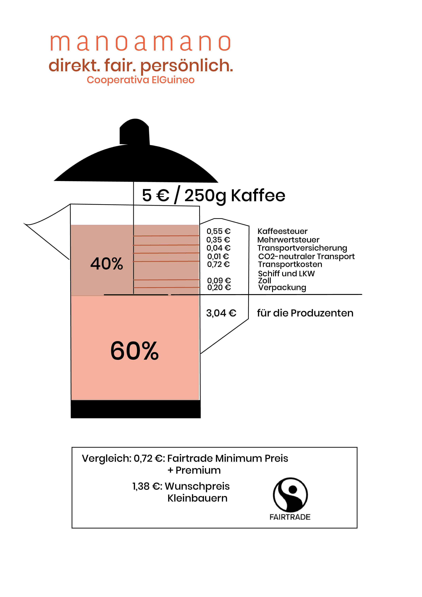
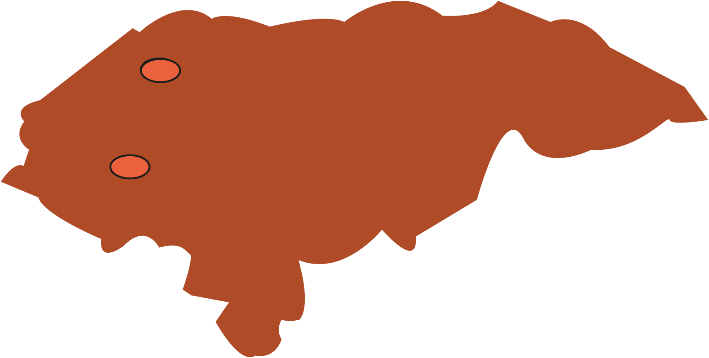
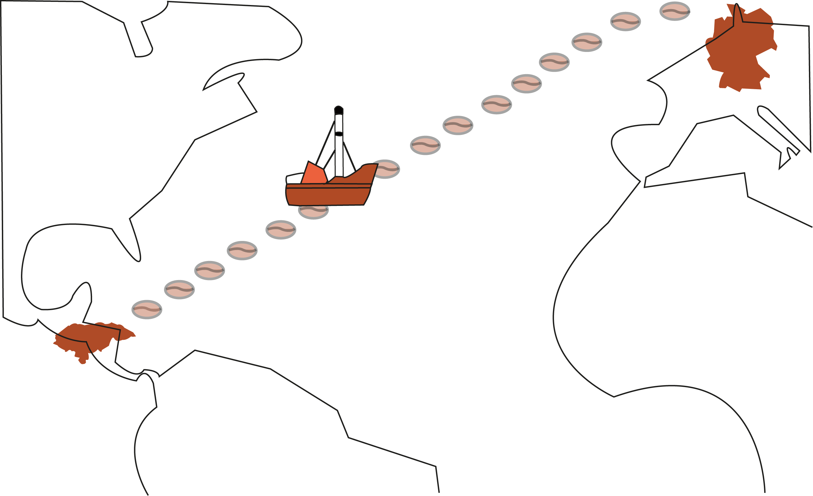
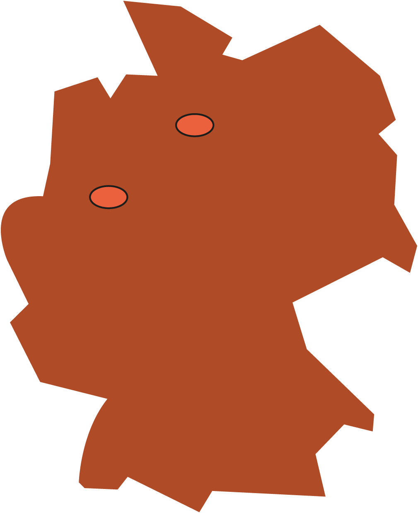
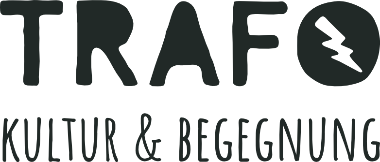

manoamano
direkt. fair. persönlich. Cooperativa ElGuineo
Aktuelles
Interesse aus dem Landtag
Anfang Februar haben wir uns mit dem NRW-Landtagsabgeordneten André Stinka getroffen. Das offene Gespräch drehte sich vor allem um nachhaltigen Konsum im gesellschaftlichen Diskurs. Wir bedanken uns noch einmal für das Interesse an unserem Projekt!

Das Projekt
direkt. fair. persönlich.
manoamano - von Hand zu Hand. Was mit einem Non-Profit Projekt begann, der Weitblick-Finanzierung eines neuen Grundschulgebäudes in El Guineo, wird zu All-Profit. Leckerer, duftender Kaffee von den Berghängen El Guineos für uns, faire Löhne für ein Jahr mühevolle Arbeit für die Kleinbauer*innen.
Die erste Kaffeelieferung im Herbst 2019 war ein voller Erfolg. Wir bedanken uns bei unseren vielen Partner*innenn für das Vertrauen und die Unterstützung. Jetzt arbeiten wir an der Gründung von manoamano als gemeinnützigen Verein - und die nächste Lieferung ist natürlich auch schon in Planung!
Wer bekommt was?
Von uns bekommt ihr darum maximale Transparenz und könnt sehen, wie sich der Preis für unseren Kaffee zusammensetzt.
Bis der Kaffee in eurer Tasse landet, legt er einen langen Weg und eine Reihe an Stationen zurück.

der Kaffee
100 % Arabica
Varietät: Ihcafe 900
Röstgrad 2
Die Idee
Wir alle trinken tagtäglich unseren Kaffee. Er gehört für uns zum morgendlichen Ritual, zum Geschäftstreffen, wie zum Mittagspäuschen. In Honduras haben wir die andere Seite des schwarzen Goldes kennengelernt.
Entwachsen aus der Sensibilisierung für entwicklungspolitische Partnerschaft auf Augenhöhe, möchten wir nun mit euch den Schritt von Non-Profit zu All-Profit wagen.
Im März 2019 führte eine Weitblickreise eine kleine Gruppe Studierender aus Münster nach Honduras in das kleine Bergdorf El Guineo. In dieser stark bewaldeten Region ist der Kaffeeanbau fast ausnahmslos die ausschließliche Einnahmequelle der Bewohner*innen, was bedeutet, dass schon kleine Einbußen in der Ernte gravierende Folgen haben können.
Zum Zeitpunkt unseres Besuches im März, hatte es schon seit 6 Monaten keine Regenfälle mehr gegeben. Kaffeepflanzen sind sehr sensibel gegenüber kleinsten Klimaschwankungen in den luftigen Berghöhen von 600m. Die honduranischen Kleinbauer*innen exportieren fast 90% des Kaffees an Großkonzerne in die USA. Die mühevolle Arbeit unterliegt dabei dem Weltmarktpreis, auf den Produzenten keinerlei Einfluss haben.
Im März war der Weltmarktpreis so tief gesunken, wie zuletzt vor 13 Jahren (ca. 1$ / Pfund). Für den Alltag der honduranischen Kleinbauer*innen bedeutet das konkret, dass diese, im Vergleich zum Weltmarktpreis von 3 $ / Pfund in 2011, aktuell nur ca. 1/3 der zum Leben benötigten Einnahmen haben.
Der herzliche Empfang der Bewohner* innen, kombiniert mit ihrem köstlich duftenden Kaffee, brachte die Bewohner*innen und Studierenden auf eine Idee: Was wäre, wenn wir Kaffee aus El Guineo direkt und ohne Zwischenhändler nach Münster importieren und nicht nur den guten Kaffee, sondern auch die Arbeit der Kleinbauer*innen durch faire Bezahlung wertschätzen würden?
Wir
El Guineo – San Pedro – Münster
Wir, das sind die Cooperativa El Guineo in Honduras. Eine kleine Gruppe Münsteraner Ehrenamtlicher, Freunde, die uns helfen und Ihr, unsere Kompliz*innen.
Cooperativa El Guineo
In dem kleinen honduranischen Bergdorf El Guineo leben rund 50 Familien, 300 Frauen, Männer und Kinder. Rund 1300 Meter über dem Meeresspiegel, eingerahmt von grünen Wäldern und Kaffeehängen, ist das Leben sehr naturnah und das Zusammenleben solidarisch. Viele Familien sind verwandt.
Für unser Projekt haben sich zunächst acht Familien zu einer Kaffeekooperative zusammengeschlossen. Nach und nach sollen ihr alle 50 Familien beitreten.
Vom Einpflanzen der Kaffeepflanzensetzlinge bis zur Röstung führen die Bäuerinnen und Bauern jeden Schritt in Handarbeit selbst durch. Beim Anbau werden keine Pestizide oder synthetischen Düngemittel eingesetzt, dafür haben die Kleinbauer*innen gar kein Geld.
Sind die Kaffeekirschen im Dezember reif, werden sie von den Familien gepflückt, vom Fruchtfleisch befreit, fermentiert, gewaschen, sortiert, getrocknet, geschält und anschließend geröstet. Dass die Bäuerinnen und Bauern selbst rösten macht unser Projekt so besonders. So bleibt die gesamte Wertschöpfung vor Ort. Zertifizieren können wir das aber nicht, dafür haben wir kein Geld.
Roberto Kattan
Unser Mann für alles. Eigentlich ist Roberto Zahnarzt, widmet sein ganzes Leben aber den sozialen Projekten. In der Region ist er sehr verwurzelt und den Menschen verbunden. Er hat selbst 2 Jahre dort gewohnt.
Roberto organisiert die Gründung der Kooperative, die faire Verteilung der Einkommen auf die Familien, koordiniert die Röstung und Verpackung und fährt den Kaffee mit seinem Auto ins 300 km entfernte San Pedro Sula. Und für all das, nimmt er kein Geld.
Ein inspirierender Mensch, der die Dörfer zudem kostenlos medizinisch versorgt, Schulmaterialien für 4.000 Kinder organisiert, und und und...
Café Molinos de Honduras
Café Molinos ist ein honduranischer Kaffeehändler. In unserem Projekt kümmert sich Molinos um die Verpackung für den Schifftransport, um Euren Gaumen Kaffeebohnen in bester Qualität zu schenken. Auch um die weniger spaßigen rechtlichen und hygienischen Vorschriften kümmert sich Molinos. Als Kompliz*in von manomano berechnet Café Molinos für all das nichts. Mehr als fair.
Kompliz*innen in Münster
manoamano – von Hand zu Hand. Dieser Kreis schließt sich in Münster. Eine kleine Gruppe Münsteraner Ehrenamtlicher kümmert sich darum, dass die Bohnen aus El Guineo bei euch landen. In der roestbar mahlen wir fleißig, stempeln und verpacken.
Unser großer Fokus in Münster liegt auf Bildung. Bildung für nachhaltigen Kaffeegenuss und darüber hinaus. Als wir das erste Mal in El Guineo ankamen, wussten wir selbst nichts über globale Agrarmärkte, die keinen Unterschied zwischen Kleinbauer*innen aus El Guineo und internationalen Konzernen kennen. Unsere Reise machte uns Freiheiten und Möglichkeiten, aber auch Risiken und Folgen unserer vernetzten, schnelllebigen Welt bewusst. Hand in Hand möchten wir dieses Bewusstsein in Form unseres fairen, direkten und persönlichen Kaffees weitertragen, aber auch mit vielen Veranstaltungen in Münster.
Unsere Veranstaltungen
Wir sind davon überzeugt, dass ein Umdenken in unserem Konsumverhalten nur durch die nötige Bildung und Informationsweitergabe bewirkt werden kann. Darum ist ein wesentlicher Teil unserer Arbeit, die Organisation von Veranstaltungen in Münster.

{kind=link}
{kind=link}
{kind=link}
{kind=link}
{kind=link}
{kind=link}
{kind=link}
{kind=link}
{kind=link}
{kind=link}
{kind=link}
{kind=link}
Andere über uns
Unser Projekt zieht immer weitere Kreise. Seht nach, was Münster über uns berichtet:
Münstersche ZeitungAntenne Münster
Hand drauf!
Bestelle unseren Kaffee und werde Kompliz*in der Gemeinnützigkeit.
Wenn du dich erst noch geschmacklich überzeugen willst, dann komm in der Trafostation vorbei und koste unseren Kaffee.
